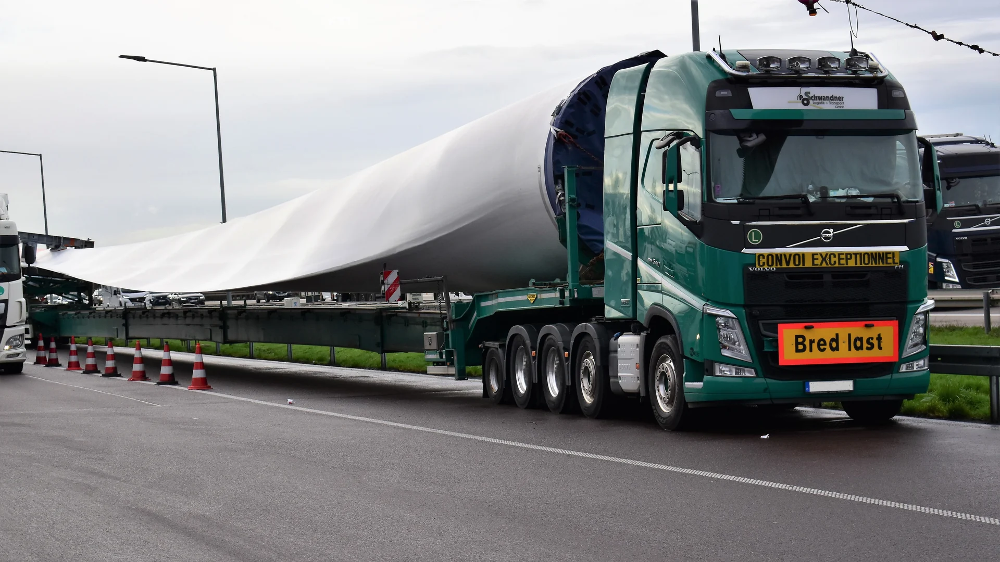
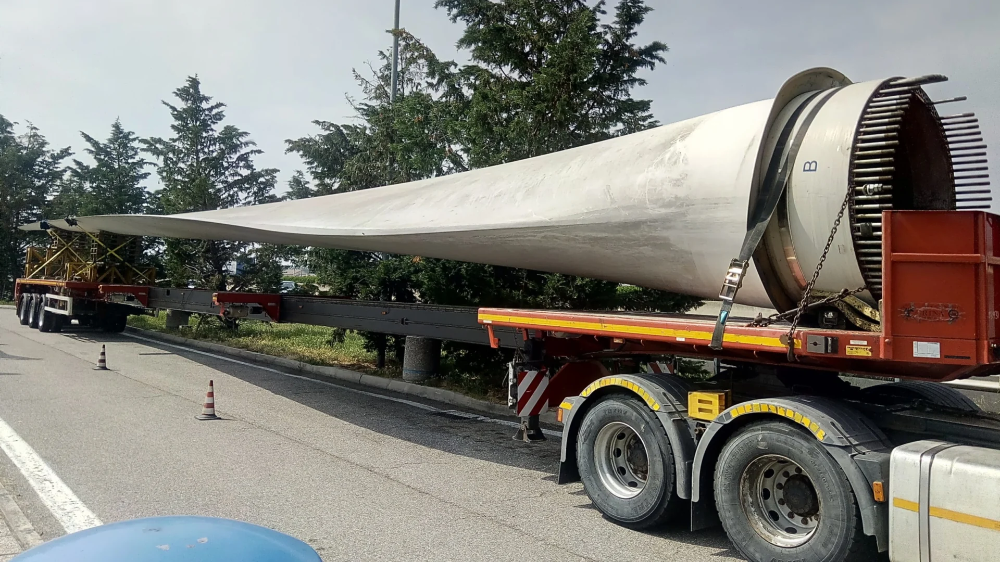

Tra cứu chuyến
Chưa kết nối dữ liệu vận hành.
PXL · Logistics Phú Xuân
Vận tải hàng dự án, thiết bị điện gió và hàng phục vụ xây dựng. Lập phương án theo kiện hàng, tuyến đường và mốc bàn giao.

01 / Công cụ khách hàng
Chưa kết nối dữ liệu vận hành.
02 / Dịch vụ vận tải

Cánh turbine, đoạn tháp, nacelle, hub và thiết bị công nghiệp quá khổ. Phương án theo từng kiện, từng lô và điều kiện tuyến.
Trao đổi về hàng dự án →Hàng xây dựng & hạ tầng
Thép, xi măng, tro bay, cột điện và thiết bị phục vụ xây dựng. Bố trí chuyến theo khối lượng, cách đóng gói và điều kiện bốc dỡ.
Yêu cầu báo giá hàng thông thường →03 / Cách PXL làm việc
Làm rõ phạm vi dịch vụ, trách nhiệm và đầu mối trao đổi trước khi triển khai.
Lập kế hoạch theo mốc nhận và giao hàng, theo dõi từng chặng và chủ động báo thay đổi.
Chọn phương tiện phù hợp, phối hợp hiện trường và kiểm soát bàn giao.